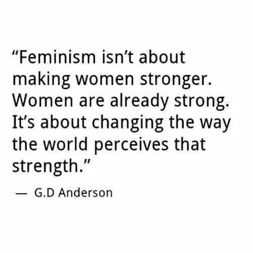
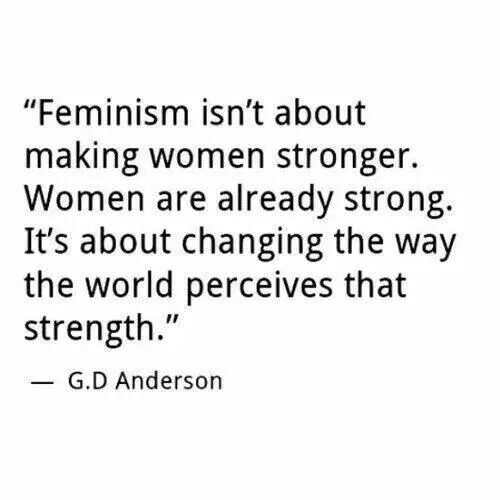

This website is for people to learn the rights of women all over world which they deserve, and the injustice they go through while earning those rights. Many people over the world don't think sexism is a problem, which I think is drastical. So people feel the need to hold protests on the inequity happening with women. All of us must understand how women and girls are not being valued, and what we need to do for their rights. Sexism has actually been with us since centuries, girls have been known to hatred and discrimination since they have been born. And in many countries the girls just get killed after being borm, because people feel the the burden of a little girl but not a boy. But remember a boy does come out of a women not a man because a man cannot even handle the pain of having a baby in their stomach for two days. And that's how POWERFUL the WOMEN of our world can be!! And we can be way more powerful, we were way more powerful than men, but those some of those moments were just forgotten. So please browse through my website and see my thougthful perspectives. And see what can you do to help feminsim, and also read these, books to increase your knowledge on feminsim, and to convince you to be a femisnist if you are not. 1. I Know Why The Caged Bird Sings. 2. The Yellow Wall Paper. 3. The Power. 4. I Am Malala. 5. Women & Power. 6. The Bell Jar. 7. She Must Be Mad. 8. We Should All Be Feminists.

 
